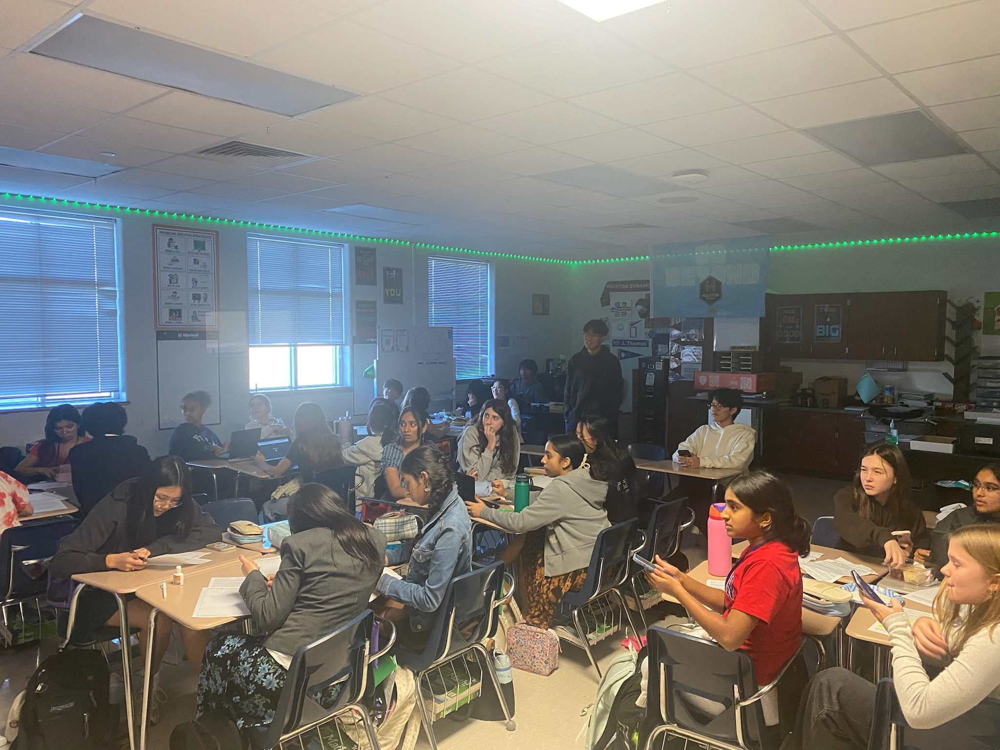
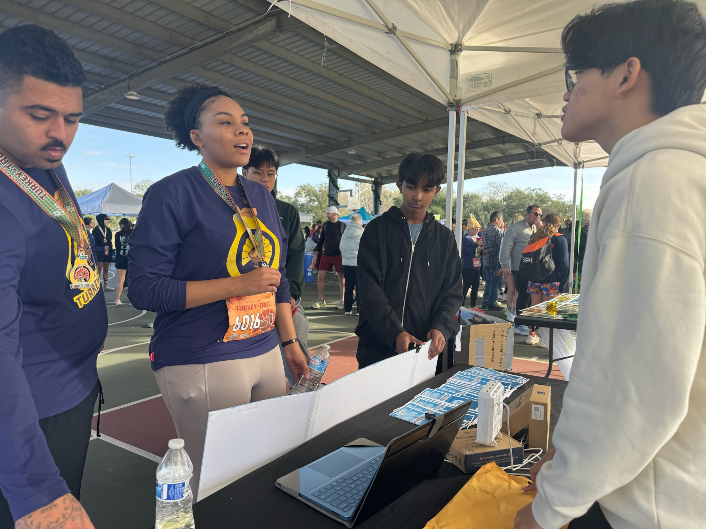
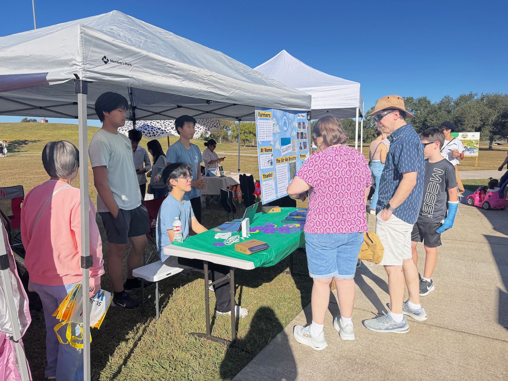

Blogs

Berry Miller Event
October 11 2025
At Berry Miller, we held a presentation for a large classroom of students ages 12-13 where we taught them about the challenges of poor air quality through informative slides and a fun hands-on experiment. .
Read more
Pearland Turkey Trot Event
October 27, 2025
At the Pearland Turkey Trot, we presented our AirGradient monitors to reveal the area’s pollutants and explained how these pollutants harm public health..
Read moreAirGradient Connection
October 20, 2025
By using the several air quality monitors that we borrowed from AirGradient, we can track the concentrations of several significant air pollutants over time in any area, allowing us to identify causes of poor air quality in the community.
Read more
Pearland Farmers Event
November 15, 2025
At Pearland’s monthly farmer’s market, we presented our project to about 60 people, raising awareness on air quality in the community by discussing current local air quality issues and sharing potential solutions.
Read more
Pearland Turkey Trot Event
November 26, 2025
Weather and air quality affect each other because weather conditions can trap or spread pollutants, while air pollution can alter temperatures, precipitation patterns, and contribute to climate change.
Read moreCommon Air Pollutants
November 26, 2025
Brazoria County’s air contains higher-than-recommended levels of pollutants like PM2.5, ozone, and gases mainly from industrial plants and vehicles, which pose serious long-term health risks to the community.
Read more
Health Impacts of Air Quality
November 26, 2025
Air pollution can quickly and severely harm nearly every organ in the body, increasing the risk of cancer, heart and lung disease, neurological disorders, and other serious health problems, especially for children and the elderly.
Read moreWhat is Air quality
November 26, 2025
Brazoria County’s air quality is often moderately unhealthy due to heavy industrial emissions, making it worse than most U.S. cities and posing increasing health risks to the community.
Read more